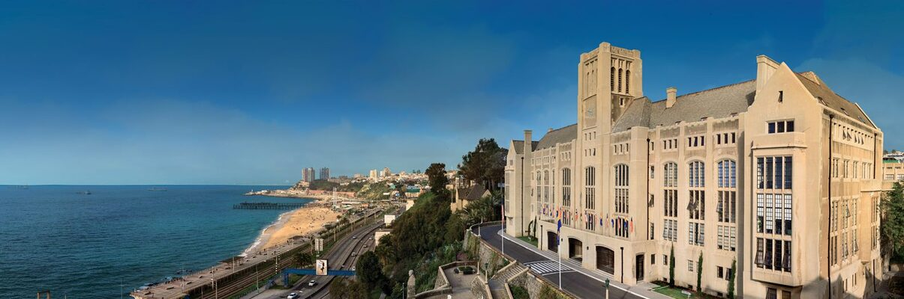

EcoStat 2022
November 27-29, 2022
UTFSM, Valparaíso, Chile.
What is EcoStat?
Ecostat is a small conference on Advances in Statistical Methods for Ecology, that intends to gather investigators interested in problems that are in the boundary between ecology and statistics.
Keynote Speakers
- - Aaron Ellison
- Harvard University, USA
Abstract
- - Vandick Batista
- University of Alagoas, Brazil
Abstract[1] Abstract[2]
- - Nidia Fabré
- University of Alagoas, Brazil
Abstract
- - Karin Maldonado
- Universidad Adolfo Ibañez, Chile
Abstract
- - Alejandra Troncoso
- Universidad de la Serena, Chile
Abstract
- - Christian Salas
- Universidad Mayor, Chile
Abstract
- - Ronny Vallejos
- Universidad Técnica Federico Santa María, Chile
Abstract
- - Paulo Duarte-Neto
- Universidade Federal Rural de Pernambuco, Recife-PE, Brazil
Abstract
Organizers
III Congreso Geoestadística y Estadística Espacio-Temporal: Teoría y Aplicaciones is organized by professor Ronny Vallejos,
and sponsored by Universidad Técnica Federico Santa María & Centro Avanzado de Ingeniería Eléctrica y Electrónica (AC3E).
Contact: ronny.vallejos@usm.cl
Sponsors